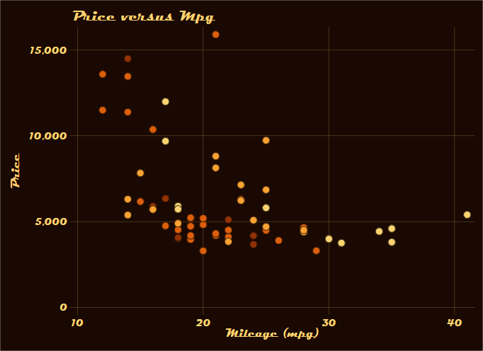
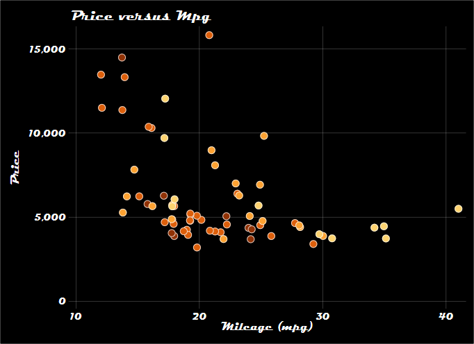
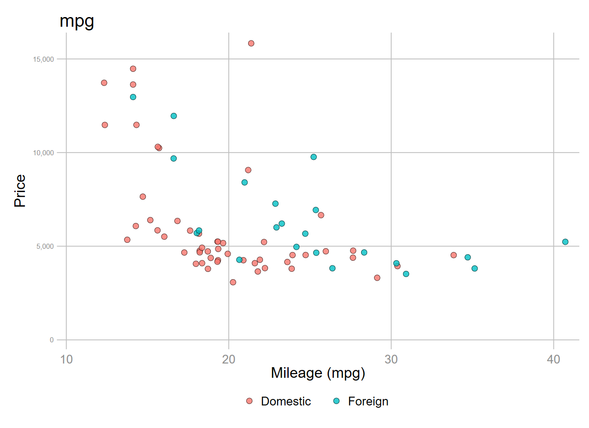
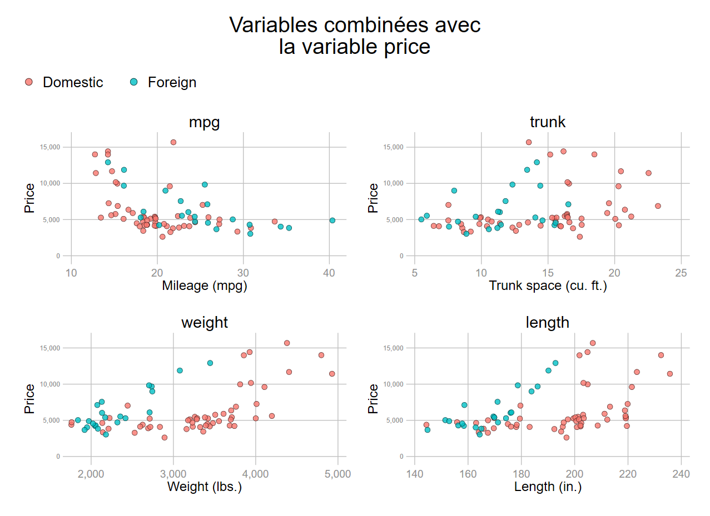

Les programmes de ce chapitre sont disponibles à l’adresse :
https://github.com/mthevenin/stata_graphiques/blob/main/programmes/chapitre2.do
1 Rappels sur les macros
1.1 local - global
Les macros sont des objets qui enregistre une valeur ou une expression. On peut les utiliser une ou plusieurs fois dans un programme, et permettent de générer des blocs de programme en boucle.
Leur utilisation est essentielle pour les graphiques Stata et faciliter leur réutilisation. Elles permettent entre autres:
- d’alléger la syntaxe de l’habillage.
- de reporter automatiquement des valeurs (moyenne, minimum, maximum…) dans un graphique, générer automatiquement une légende ou une série de labels qui sera reporté sur un axe discret.
- de produire des graphiques complexes, en particulier en générant des macros empilées.
Penser à tester/visualiser le contenu de la macro, avec display (di) ou macro list (mac list). - mac list renvoie la valeur ou l’expression qui a été réellement enregistré. A privilégier pour les macros qui renvoient une chaîne de caractère.
- display (di) peut être privilégier pour visualiser ce qui sera affiché dans la fenêtre de l’output, ou pour les macros qui renvoient une valeur. à la fin de la session.
Macro temporaire: local
Les macros de type temporaire (local) sont conservées en mémoire seulement le temps de l’exécution. Cependant en exécutant Stata avec Notebook Jupyter (librairie Stata Kernel – Kyle barron*), ce type de macro vont rester en mémoire d’une exécution à une autre, ce qui peut présenter des avantages, en particulier pour les graphiques. Les macros seront effacées à la fin de la session. Voir la section dédiée à Python.
Syntaxe
local nom [=] expression/opération
local nom [=] “expression”
local nom [=] `““expression””'
local nom : fonction_macro Appel de l’expression dans un programme
`nom'
“`nom'”Test/visualisation de l’expression
mac list _nom
di `nom'
di “`nom'”local x 1 + 1
mac list _x
_x: 1 + 1
di `x'
2mac list ne renvoie pas le résultat de l’opération, alors qu’il a été bien généré. On doit utiliser l’opérateur d’affectation = .
local x = 1 + 1
mac list _x
_x: 2
di `x'
2local x "ABC" // ou
local x ABC
mac list _x
_x: ABC
di `x'
ABC not found
di "`x'"
ABClocal x "A" "B" "C"
mac list _x
_x: A" "B" "C
di "`x'"
ABClocal x `""A" "B" "C""'
mac list _x
_x: "A" "B" "C"
di "`x'"
A" "B" "C" " invalid namedi renvoie de nouveau un message d’erreur alors que la macro est correctement assignée.
local no 0 "Non" 1 "Oui"
mac list _no
_no: 0 "Non" 1 "Oui"
di "`no'"
0 Non" 1 "Oui"" invalid nameRemarque: de nouveau di renvoie un message d’erreur alors que la macro est correctement assignée.
local no 0 "Non" 1 "Oui"
mac list _no
_no: 0 "Non" 1 "Oui"
di "`no'"
0 Non" 1 "Oui"" invalid nameMacro en dur: global
Les macros de type global sont enregistrées en dur, et conservées en mémoire d’une exécution à une autre et d’une session à une autre. Elles sont appelées avec $ et, avec mac list, le nom de la macro n’est pas précédé d’un underscore.
Test/visualisation de l’expression
mac list nom
di $nom
di "$nom"1.2 La commande levelsof
Cette commande particulièrement utile, pour ne pas dire incontournable, récupère les valeurs d’une variable et les enregistre dans une macro temporaire. levelsof précède régulièrement l’utilisation d’une boucle de type foreach.
Syntaxe: levelsof nom_var [if/in], local(nom_macro)
Exemple
sysuse auto, clear
label list origin
origin:
0 Domestic
1 Foreign
levelsof foreign, local(f)
mac list _f
_f: 0 1Warning: si la variable est de type string, l’ordre des expressions enregistrées dans la macro suivra l’ordre alphabétique ce qui ne correspondra pas forcément à ce qui est recherché.
1.3 Quelques fonctions associées à une macro
Il ne s’agit ici que de quelques fonctions utiles pour produire des graphiques et faciliter leur automatisation. L’ensemble des fonctions associées à une macro sont disponible dans l’aide (help macro).
word count
Permet de compter le nombre de termes contenus dans une expression enregistrée sous forme de macro. Utile pour compter le nombre de boucles à effectuer avec forvalue.
Syntaxe: Local/global : word count(nom_macro)
Exemple
levelsof rep78, local(r)
1 2 3 4 5
local nombre: word count(`r')
mac list _nombre
_nombre: 5
value label
Récupère le nom d’un label affecté aux modalités d’une variable. Le nom de la variable peut-être enregistré en amont sous forme de macro.
Syntaxe: local/global nom_macro : value label nom_variable/nom_macro
local varname foreign
local labn : value label `varname'
mac list _labn
_labn : origin
label
Récupère l’expression de la modalité associée à une valeur d’un nom de label. Le nom du label peut avoir été enregistré en amont dans une macro (avec par exemple la fonction value label).
Syntaxe: local/global nom_macro : label nom_label valeur
local lab0 : label origin 0
local lab1 : label origin 0
mac list _lab0
lab0 : Domestic
mac list _lab1
lab1 : Foreignlocal labn: value label foreign
local lab0: label `labn' 0
local lab1: label `labn' 1
mac list _lab0 _lab1
_lab0 : Domestic
_lab1 : ForeignEn récupérant les valeurs de la variable avec levelsof, la modalité de chaque valeur peut-être récupérée dans une boucle foreach.
levelsof foreign, local(v)
local labn: value label foreign
foreach val of local v {
local lab`val': label `labn' `val'
mac list _lab`val'
}
_lab0 : Domestic
_lab1 : ForeignEn mettant dès le début une macro sur le nom de la variable, on automatise les modifications. Il est même possible de mettre dans la macro plusieurs variables, et effectuer l’opération dans une boucle principale.
local X foreign
levelsof `X', local(v)
local labn: value label `X'
foreach val of local v {
local lab`val': label `labn' `val'
mac list _lab`val'
}
_lab0 : Domestic
_lab1 : ForeignGraphique
On va récupérer automatiquement les modalités d’une variable pour renseigner la légende.
- La variable rep78 est regroupée en 2 modalités.
- Les modalités de la légende sont automatiquement insérées dans l’expression
legend(order(…)...). - Pour utiliser une autre variable que rep, il suffit de modifier le nom de la variable dans la première macro (X).
sysuse auto, clear
gen rep= rep78<4
label define rep 0 "rep<4" 1 "rep>=4", modify
label value rep rep
*Récupération des modalités
local X rep
local labn: value label `X'
levelsof `X', local(l)
foreach l2 of local l {
local lab`l2': label `labn' `l2'
}
*Graphique
#delimit ;
tw scatter price mpg if `X',
mc("237 248 177") mlc(black) mlw(*.3) msiz(*1.5) jitter(2)
|| scatter price mpg if !`X',
mc("65 182 196") mlc(black) mlw(*.3) msiz(*1.5) jitter(2)
|| , legend(order(1 "`lab0'" 2 "`lab1'") pos(11) region(color(%0)))
title("Variable `X'")
;
#delimit cr
Il suffit de modifier la première ligne qui enregistre le nom de la variable pour faire le même graphique avec la variable foreign: local X foreign.

Exercice
A partir du programme faire un graphique combiné des deux graphiques précédents en automatisant au maximum la sélection des variables rep et foreign. Il y a très peu d’ajouts ou de modifications à faire.

variable label
Récupère le label d’une variable sous forme du macro. Utile pour gérer une modification du titre des axes passer par les lignes de programme d’un graphique, et plus généralement pour donner de l’information sur variable de type continu ou de comptage sans label affecté au valeurs.
Syntaxe: local/global nom_macro : variable label variable/macro
local labv: variable label foreign
mac list _labv
_labv : car typeModification du format d’une valeur numérique (changement du nombre de décimale)
Dans la section suivante, on va utiliser utiliser des objets de type macro qui sont générés après avoir exécuté une commande. Lorsque ces objets sont des valeurs statistiques comme des moyennes, estimateurs de regression etc., leur format enregistré comporte généralement un nombre important de décimales. Il est possible de modifier/réduire ce nombre de décimales avec la fonction di.
Syntaxe: local/global nom_macro : di format valeur/macro
local dec: di %6.2f 0.123456789
di `dec'
.121.4 return et ereturn
Après l’exécution d’une commande, un certain nombre d’objets sont conservés en mémoire jusqu’à l’exécution de la commande suivante. Leur liste est indiquée en bas du fichier d’aide.
objets return:
r(nom_objet)Affichage de la liste:
return listobjets ereturn:
e(nom_objet)Affichage liste:
ereturn list
sum price, d
Price
-------------------------------------------------------------
Percentiles Smallest
1% 3291 3291
5% 3748 3299
10% 3895 3667 Obs 74
25% 4195 3748 Sum of Wgt. 74
50% 5006.5 Mean 6165.257
Largest Std. Dev. 2949.496
75% 6342 13466
90% 11385 13594 Variance 8699526
95% 13466 14500 Skewness 1.653434
99% 15906 15906 Kurtosis 4.819188
return list
scalars:
r(N) = 74
r(sum_w) = 74
r(mean) = 6165.256756756757
r(Var) = 8699525.97426879
r(sd) = 2949.495884768919
r(skewness) = 1.653433511704859
r(kurtosis) = 4.819187528464004
r(sum) = 456229
r(min) = 3291
r(max) = 15906
r(p1) = 3291
r(p5) = 3748
r(p10) = 3895
r(p25) = 4195
r(p50) = 5006.5
r(p75) = 6342
r(p90) = 11385
r(p95) = 13466
r(p99) = 15906qui sum, d
di r(mean)
.54054054
di `r(mean)'
.54054054
local mean r(mean)
di `mean'
.54054054
mac list _mean
.5405405405405406
local mean : di %6.2f `r(mean)'
di `mean'
0.54
mac list _mean
_mean : 0.54Au niveau d’un graphique ces objets permettent:
- D’afficher des valeurs dans un graphique.
- De générer automatiquement des éléments de type
xlineyline. - De générer des graphiques de type scatteri ou pci qui entrent directement les coordonnées au lieu des variables.
Graphique
On va tracer une droite sur chaque axe qui reporte les moyennes des variables price et mpg, les valeurs de ces moyennes sont reportés en bas du graphique en tant que note
- Récupération des moyennes de price et mpg
- les noms des macros seront mprice et * mpg*
local varlist price mpg
foreach v of local varlist {
qui sum `v'
local m`v' : di %6.2f `r(mean)'
}
* Récupération des labels de la variable foreign
local X foreign
local labn: value label `X'
levelsof `X', local(l)
foreach l2 of local l {
local lab`l2': label `labn' `l2'
}
* Graphique
#delimit ;
tw scatter price mpg if !foreign,
mlc(black) mlw(*.3) mc("254 196 79") msiz(*1.5) jitter(2)
|| scatter price mpg if foreign,
mlc(black) mlw(*.3) mc("153 52 4") msiz(*1.5) jitter(2)
|| , legend(order(1 "`lab0'" 2 "`lab1'") pos(11) region(color(%0)))
yline(`mprice', lc("236 112 20") lw(*1.5))
xline(`mmpg' , lc("236 112 20") lw(*1.5))
note("{bf:Moyenne Price = `mprice'}"
"{bf:Moyenne Mpg = `mmpg'}")
;
#delimit cr
1.5 Compteurs i++
Les compteurs vont s’avérer très utiles dans les expressions en boucle pour générer une valeur incrémentale de type macro. C’est sur ce principe que fonctionne les boucles de type forvalue, mais il est possible de les générer dans une boucle de type foreach.
Exemple1: on initialise un compteur i. Dans une boucle forvalue dont l’incrément va de 10 à 15 (\(\delta=+1\)), on génère à chaque boucle une valeur allant de 1 à 6 avec la macro `i++'.
local i = 1
forvalue k = 10/15 {
di "k=`k' => i=`i++'"
}
/*
k=10 => i=1
k=11 => i=2
k=12 => i=3
k=13 => i=4
k=14 => i=5
k=15 => i=6
*/Exemple 2: on va afficher les noms d’une liste de variable en noms génériques dans une boucle foreach.
local i=1
local varlist price mpg turn length
foreach v of local varlist {
di "variable`i++' = `v'"
}
variable1 = price
variable2 = mpg
variable3 = turn
variable4 = lengthPoint de vigilance
Appels multiples d’un compteur dans une boucle. Dans les exemples précédents, le compteur n’a été utilisé qu’une fois dans une itération. Il est important de noter que le compteur peut continuer à incrémenter lorsqu’il est appelé plusieurs fois dans une itération. Nous allons présenter les différents comportements du compteur, et le moyen de fixer sa valeur dans une itération avec des appels multiples.
Situation1: Un seul appel du compteur (cas standard)
forv i=1/5 {
di "iteration `i': i++ =" `i++'
}
/*
iteration 1: i++ =1
iteration 2: i++ =2
iteration 3: i++ =3
iteration 4: i++ =4
iteration 5: i++ =5
*/Situation2: Plusieurs appels dans une itération dans une boucle standard : la valeur du compteur est fixe dans chaque itération, mais pour la première et la dernière, le second appel est ignoré.
forv i=1/5 {
di "iteration `i': i++ =" `i++'
di "iteration `i': i++ =" `i++'
}
/*
iteration 1: i++ =1
iteration 2: i++ =2
iteration 2: i++ =2
iteration 3: i++ =3
iteration 3: i++ =3
iteration 4: i++ =4
iteration 4: i++ =4
iteration 5: i++ =5
iteration 5: i++ =5
iteration 6: i++ =6
*/Situation3: On initialise le compteur en amont (k*), il continue d’incrémenter dans chaque itération.
local k=1
forv i=1/5 {
di "iteration `i': " `k++'
di "iteration `i': " `k++'
}
/*
iteration 1: 1
iteration 1: 2
iteration 2: 3
iteration 2: 4
iteration 3: 5
iteration 3: 6
iteration 4: 7
iteration 4: 8
iteration 5: 9
iteration 5: 10
*/Situation4: le compteur est appelé plusieurs fois. On veut fixer sa valeur pour qu’elle soit égale à la valeur de l’itération, sans rencontrer le problème de la situation2 avec un appel simple à la première et dernière itération. On va devoir initialiser un nouveau compteur à l’intérieur de la boucle, à chaque itération (compteur j).
local k=1
forv i=1/5 {
local j = `k++'
di "iteration `i': " `j'
di "iteration `i': " `j'
}
iteration 1: 1
iteration 1: 1
iteration 2: 2
iteration 2: 2
iteration 3: 3
iteration 3: 3
iteration 4: 4
iteration 4: 4
iteration 5: 5
iteration 5: 5Si le compteur est utilisé plusieurs dans une itération et que sa valeur y doit être fixe, on devra donc utiliser cette dernière expression.
Graphique
Le graphique suivant donne la distribution de la variable displacement selon le nombre de réparation (variable rep78). Pour chaque valeur de rep78, la moyenne de displacement est reportée. Ces moyennes sont connectées à la moyenne calculée sur l’ensemble des voitures. On retrouve le principe d’un graphique de type « lollipop ».
local i=1
levelsof rep78, local(l)
foreach v of local l {
qui sum displacement if rep78==`v'
local m`i++' = `r(mean)'
}
qui sum displacement
local mean `r(mean)'
#delimit ;
tw scatteri 2 `m1', msymbol(|) mc("210 50 0") msize(*5) mlw(*3)
|| scatteri 3 `m2', msymbol(|) mc("210 50 0") msize(*5) mlw(*3)
|| scatteri 4 `m3', msymbol(|) mc("210 50 0") msize(*5) mlw(*3)
|| scatteri 5 `m4', msymbol(|) mc("210 50 0") msize(*5) mlw(*3)
|| pci 2 `mean' 5 `mean', lw(*2.5) lc("210 50 0")
|| pci 2 `mean' 2 `m1' , lw(*2.5) lc("210 50 0")
|| pci 3 `mean' 3 `m2' , lw(*2.5) lc("210 50 0")
|| pci 4 `mean' 4 `m3' , lw(*2.5) lc("210 50 0")
|| pci 5 `mean' 5 `m4' , lw(*2.5) lc("255 50 0")
|| scatter rep78 displacement, mc("255 117 0%70") mlc(210 50 0) mlw(*.5) msize(*1) jitter(5) || ,
xlabel(,glw(*1.2)) ylabel(,glw(*.5) angle(0)) yscale(range(1.8, 5.2))
legend(off)
title("Averages of displacement") ytitle("Number of repairs")
Pas à pas du programme
recode rep78 (1=2)
local i=1
levelsof rep78, local(l)
foreach v of local l {
qui sum displacement if rep78==`v'
local m`i++' = `r(mean)'
}
qui sum displacement
local mean `r(mean)'- On regroupe les deux premières valeurs de rep78 (peu d’observations).
- On initialise le compteur qui sera utilisé dans une boucle
foreach. - On récupère les valeurs de la variable rep78 avec
levelsof. - Dans la boucle on récupère les valeurs des moyennes de displacement pour chaque valeur de
rep78. Elles sont enregistrées dans les expressions macro m1 à m4. Les valeurs 1 à 4 sont générées par le compteuri++. - On récupère la moyenne pour l’ensemble des voitures. Elle est enregistrée dans la macro mean.
#delimit ;
tw scatteri 2 `m1', msymbol(|) mc("210 50 0") msize(*5) mlw(*3)
|| scatteri 3 `m2', msymbol(|) mc("210 50 0") msize(*5) mlw(*3)
|| scatteri 4 `m3', msymbol(|) mc("210 50 0") msize(*5) mlw(*3)
|| scatteri 5 `m4', msymbol(|) mc("210 50 0") msize(*5) mlw(*3)
|| pci 2 `mean' 5 `mean', lw(*2.5) lc("210 50 0")
|| pci 2 `mean' 2 `m1' , lw(*2.5) lc("210 50 0")
|| pci 3 `mean' 3 `m2' , lw(*2.5) lc("210 50 0")
|| pci 4 `mean' 4 `m3' , lw(*2.5) lc("210 50 0")
|| pci 5 `mean' 5 `m4' , lw(*2.5) lc("255 50 0")
|| scatter rep78 displacement, mc("255 117 0%70") mlc(210 50 0) mlw(*.5)
msize(*1) jitter(5)
|| , xlabel(,glw(*1.2)) ylabel(,glw(*.5) angle(0)) yscale(range(1.8, 5.2))
legend(off)
title("Averages of displacement") ytitle("Number of repairs");
#delimit cr- Pour faciliter l’écriture et la lecture du programme on change de type de délimiteur.
- Les moyennes par niveau de réparation seront en arrière plan pour visualiser les valeurs de toutes les voitures.
- On utilise
scatteripour générer le nuage des moyennes pour chaque niveau de réparation. Les valeurs de ces dernières sont connues (de 2 à 5) et les moyennes de displacement on été enregistrées dans les macros m1 à m4. Pour le premier niveau de réparation le nuage est donc généré par **scatteri 2m1'** [scatteri valeur_Y valeur_X]. On a utilisé un symbole de type ***pipe*** au lieu d’une bulle [msymbol(|)`]. - On trace une droite verticale avec la fonction
pcipour indiquer la moyenne de displacement pour l’ensemble des voitures. La valeur de cette moyenne (X) a été calculée en amont (macro mean) et on connait les valeurs de Y. La droite est donc générée par pci 2mean' 5mean’ [pci min_Y min_X max_Y max_X]. - On va connecter la valeur des moyennes pour chaque niveau de réparation avec la moyenne d’ensemble. On va ici tracer des droites horizontale, dont les coordonnées Y seront cette fois ci fixe, et le minimum de X toujours égal à la moyenne d’ensemble. Pour le premier niveau de réparation : pci 2
mean' 2m1’.
Remarque: on pourrait améliorer le rendu de l’angle pour la connection des moyennes en modifiant légèrement les valeurs de Y_min et Y_max pour la droite verticale, avec par exemple : pci 1.985 mean' 5.015mean’, lw(2.5) lc(“210 50 0”)*.
1.6 Autres objets macro: token, tempvar
1.6.1 Token
Les tokens sont régulièrement utilisés dans la programmation de routines (.ado), mais peuvent dans un programme courant s’avérer utile pour transformer les noms variables en macros. Le token est une macro qui prend comme expression une liste de numéros : 1',2’, 3'…… On transforme une expression en token avec la commande **tokenize`**.
tokenize price mpg
sum `1' `2'
/*
Variable | Obs Mean Std. Dev. Min Max
-------------+---------------------------------------------------------
price | 74 6165.257 2949.496 3291 15906
mpg | 74 21.2973 5.785503 12 41
*/Ou avec une expression sous forme de macro:
local varlist price mpg
tokenize `varlist'
sum `1' `2'Application pour un graphique:
local varlist price mpg foreign
tokenize `varlist'
tw scatter `1' `2' if !`3'
|| scatter `1' `2' if `3'1.6.2 Variables temporaires
Variables, fichiers… peuvent être créés de manière temporaire. On regardera seulement les variables temporaires générées avec la fonction tempvar nom_variable, elles sont appelées sous forme de macro temporaire : commandnom_variable’`. Principalement, elles permettent de générer des variables dont le nom n’entre pas en conflit avec des variables existantes, le nom enregistré étant de la forme** _00000#**, tout en n’alourdissanrpas artificiellement le contenu de la base.
set obs 100
number of observations (_N) was 0, now 100
tempvar x
gen `x' = runiform()
des
/*
----------------------------------------------------------------------------------
storage display value
variable name type format label variable label
----------------------------------------------------------------------------------
__000000 float %9.0g
----------------------------------------------------------------------------------
*/
sum `x'
/*
Variable | Obs Mean Std. Dev. Min Max
-------------+---------------------------------------------------------
__000000 | 100 .5253147 .2740814 .0073346 .9979447
*/
tempvar x
gen `x' = runiform()
des
/*
----------------------------------------------------------------------------------
storage display value
variable name type format label variable label
----------------------------------------------------------------------------------
__000000 float %9.0g
__000001 float %9.0g
----------------------------------------------------------------------------------
*/
/*
sum `x'
Variable | Obs Mean Std. Dev. Min Max
-------------+---------------------------------------------------------
__000001 | 100 .471744 .2926945 .0028599 .9711645
*/ Graphique
On va de nouveau représenter un nuage de points, entre la variable price et la variable displacement. La couleur des bulles représente l’appartenance à un quartile de la variable displacement.
sysuse auto, clear
tempvar qdisp
local varlist price displacement `qdisp'
tokenize `varlist'
qui xtile `qdisp' = `2', n(4)
qui sum `2', d
#delimit ;
tw scatter `1' `2' if `3'==1,
mlc(black) mlw(*.5) mc("68 1 84%60") msiz(*1.5) jitter(1)
|| scatter `1' `2' if `3'==2,
mlc(black) mlw(*.5) mc("49 104 142%60") msiz(*1.5) jitter(1)
|| scatter `1' `2' if `3'==4,
mlc(black) mlw(*.5) mc("53 183 121%60") msiz(*1.5) jitter(1)
|| scatter `1' `2' if `3'==3,
mlc(black) mlw(*.5) mc("253 231 37%60") msiz(*1.5) jitter(1)
||, legend(off)
xlabel(`r(p25)' "`r(p25)'" `r(p50)' "`r(p50)'" `r(p75)' "`r(p75)'")
;
2 Alléger la syntaxe
… et surtout faciliter les changements d’options.
On le voit, les d’options sont répétées d’un objet graphique à un autre, et souvent en grand nombre. Les modifications de l’habillage du graphique avec les couleurs, les tailles/épaisseurs, peuvent alors s’avérer laborieuse.
De manière très simple, les options communes à plusieurs objets ou éléments du graphique peuvent être renseignées en amont, sous forme de macros. Cela facilite grandement la modification des options.
Prenons le graphique suivant avec un habillage assez poussé qui modifie les couleurs par défauts des titres et couleurs de fonds. Pour chaque nuage la taille de la bulle, la couleur et l’épaisseur du contour sont identiques, les titres partagent les mêmes couleurs, ainsi que les deux éléments du background.
graph set window fontface Magneto
tempvar rep
gen `rep' = rep78
recode `rep' (1=2)
#delimit ;
tw scatter price mpg if `rep'==2, mc("145 50 5") mlw(*.5) mlc(black) msiz(*1.5)
|| scatter price mpg if `rep'==3, mc("221 95 11") mlw(*.5) mlc(black) msiz(*1.5)
|| scatter price mpg if `rep'==4, mc("254 162 50") mlw(*.5) mlc(black) msiz(*1.5)
|| scatter price mpg if `rep'==5, mc("254 211 112") mlw(*.5) mlc(black) msiz(*1.5)
|| , legend(off)
ylabel(, labc("254 211 112") glc("254 211 112") glw(*.2) angle(0))
xlabel(, labc("254 211 112") glc("254 211 112") glw(*.2))
ytitle(, color("254 211 112"))
xtitle(, color("254 211 112"))
title("Price versus Mpg", color("254 211 112") pos(11))
graphr(color("102 37 6*4")) plotr(color("102 37 6*4"))
;
En mettant les options sous forme de macro et en les appelant dans la commande graphique, visuellement la syntaxe du graphique est nettement allégée :
tempvar rep
gen `rep' = rep78
recode `rep' (1=2)
local mopt "mlw(*.5) mlc(black) msiz(*1.5)"
local col1 "254 211 112"
local col2 "102 37 6*4"
#delimit ;
tw scatter price mpg if `rep'==2, mc("145 50 5") `mopt'
|| scatter price mpg if `rep'==3, mc("221 95 11") `mopt'
|| scatter price mpg if `rep'==4, mc("254 162 50") `mopt'
|| scatter price mpg if `rep'==5, mc("254 211 112") `mopt'
|| , legend(off)
ylabel(, labc(`col1') glc(`col1') glw(*.2) angle(0))
xlabel(, labc(`col1') glc(`col1') glw(*.2))
ytitle(, color(`col1')) xtitle(, color(`col1'))
title("Price versus Mpg", color(`col1') pos(11))
graphr(color(`col2')) plotr(color(`col2'))
;
La modification des options est réalisée une seule fois en modifiant l’expression des macros.
Par exemple, en changeant quelques couleurs (coutours et titres) et en ajoutant un jitter:
local mopt "mlw(*.5) mlc(white) m() msiz(*1.5) jitter(2)"
local col1 white
local col2 black
#delimit ;
tw scatter price mpg if `rep'==2, mc("145 50 5") `mopt'
|| scatter price mpg if `rep'==3, mc("221 95 11") `mopt'
|| scatter price mpg if `rep'==4, mc("254 162 50") `mopt'
|| scatter price mpg if `rep'==5, mc("254 211 112") `mopt'
|| , legend(off)
ylabel(, labc(`col1') glc(`col1') glw(*.2) angle(0))
xlabel(, labc(`col1') glc(`col1') glw(*.2))
ytitle(, color(`col1')) xtitle(, color(`col1'))
title("Price versus Mpg", color(`col1') pos(11))
graphr(color(`col2')) plotr(color(`col2'))
;
3 Automatiser la programmation
Les informations qui vont suivre demande un minimum de pratique avec la manipulation des macros Stata.
3.1 Macros empilées
Le principe est plutôt simple, il s’agit lors d’une expression en boucle de conserver et empiler les expressions générées à chaque itération, et les enregistrer dans une macro.
Exemple : On veut obtenir la chaîne de caractère «A B C » à partir des trois éléments distincts « A », « B » et « C ».
Avec une macro standard:
local expression A B C
foreach e of local expression {
mac list _ms
}
/*
_ms : A
_ms : B
_ms : C
*/
mac list _ms
* _ms: CDans chaque itération, chaque expression a bien été enregistrée, mais elle est écrasée à l’itération suivante. On pourrait à chaque itération enregistrer chaque macro et les empiler à l’extérieur de la boucle, mais il est possible de le faire automatiquement avec une macro dite « empilée ».
La syntaxe est simple, on appelle la macro dans l’expression qui la génère, ce qui permet de la garder en mémoire à chaque boucle.
Syntaxe:
local nom_macro `nom_macro' expression
global nom_macro $nom_macro expression Avec une macro empilée:
local expression A B C
foreach e of local expression {
local me `me' `ms'
mac list _me
}
/*A chaque itération
_me: A
_me: A B
_me: A B C
*/
*Expression finale enregistrée
mac list _me
* _me: A B C
3.1.1 Automatiser la création du graphique
Pour un graphique, une application évidente est d’alléger et automatiser une syntaxe qui empile plusieurs objets graphiques de même nature. Si on reprend un type de nuage de points déjà exécuté de nombreuses fois dans ce document:
tw scatter price mpg if rep78==1
|| scatter price mpg if rep78==2
|| scatter price mpg if rep78==3
|| scatter price mpg if rep78==4
|| scatter price mpg if rep78==5Avec une macro empilée:
* On génère la syntaxe
levelsof rep78, local(l)
foreach v of local l {
local scat `scat' scatter price mpg if rep78==`v' ||
}
* Exécution du graphique
tw `scat' , legend(off)Ce qui est généré par la macro à chaque itération :
Itération 1:scatter price mpg if rep78==1 ||scatter price mpg if rep78==1 || scatter price mpg if rep78==2 ||scatter price mpg if rep78==1 || scatter price mpg if rep78==2 ||
scatter price mpg if rep78==3 ||scatter price mpg if rep78==1 || scatter price mpg if rep78==2 ||
scatter price mpg if rep78==3 || scatter price mpg if rep78==4 ||scatter price mpg if rep78==1 || scatter price mpg if rep78==2 ||
scatter price mpg if rep78==3 || scatter price mpg if rep78==4 ||
scatter price mpg if rep78==5 ||C’est la dernière qui est finalement enregistrée et il ne manque plus qu’à l’appeler après tw. Au-delà de l’allègement de la syntaxe du grap recode rep78 (1=2) hique cette manière de procéder automatise des modifications faites en amont, par exemple ici un regroupement de modalités de la variable rep78.
*Il n’est pas nécessaire de modifier le graphique
levelsof rep78, local(l)
foreach v of local l {
local scat `scat' scatter price mpg if rep78==`v' ||
}
tw `scat' , legend(off)3.1.2 Générer une légende
Sur le même principe, on peut générer automatiquement une légende. L’opération peut néanmoins s’avérer un peu plus délicate, en raison du contrôle des doubles quotes pour les labels.
Dans un premier temps on ne va pas utiliser les fonctions macro qui permettent de récupérer automatiquement les noms et le contenu des labels.
Sans les fonctions macro:
local l1 `""Domestic""'
local l2 `""Foreign""'
forvalue i=1/2 {
local ord `ord' `i' `l`i''
}
macro list _ord
* _ord: 1 "Domestic" 2 "Foreign"
#delimit ;
tw scatter price mpg if !foreign
|| scatter price mpg if foreign
||, legend(order(`ord'))
;Rappel: pour la légende on doit explicitement récupérer les doubles quotes pour les expressions qui seront affichées dans la légende: local nom_macro `““expression”“’
Avec les fonctions macro:
Les fonctions utilisées sont value label pour récupérer le nom du label et lab pour récupérer l’expression affectée à la modalité. Comme les expressions de la légende vont être récupérées via des macros on va accroître le nombre de quotes, ce qui peut s’avérer fastidieux pour lire le programme et éventuellement le modifier. Dans le programme qui suit on va générer automatiquement la syntaxe principale du graphique avec une macro empilée, comme expliqué précédemment. Les noms des variables seront également transformés en token. Pour anticiper un changement de variable de stratification, ici foreign, on va utiliser un compteur pour automatiser le nombre d’éléments contenu dans la légende.
local varlist price weight foreign
tokenize `varlist'
* Légende
local labn: value label `3' // on récupère le nom du label
levelsof `3', local(l)
local i=1
foreach l2 of local l {
local lab`l2': label `labn' `l2' // on récupère l’expressions pour chaque valeur
local lab`l2' `""`lab`l2''""' // on transforme l’expressions en macro
local ord `ord' `i++' `lab`l2'' // on génère la syntaxe de la légende
}
* Graphique
local ops mlc(black) mlw(vthin)
foreach i of local l {
local scat `scat' scatter `1' `2' if `3'==`i', `ops' ||
}
tw `scat', legend(order(`ord'))3.2 Routine (.ado)
Manuel d’aide Stata [entrée syntax] https://www.stata.com/manuals/p.pdf#ppProgramming
Principe des programmes qui exécutent des commandes (.ado)
La routine/commande peut être programmée dans un programme principal (.do) ou sauvegardé comme .ado dans le répertoire où sont enregistrées les commandes externes (répertoire ado). Il est conseillé de sauvegarder ses propres commandes dans un sous répertoire personal, et de créer des sous répertoire par lettre de l’alphabet. Le nom du fichier .ado doit être identique au nom de la commande programmée.
Nous allons décrire seulement quelques principes qui utilisent les éléments vus dans ce chapitre. Il est difficilement envisageable de s’engager dans la programmation d’une commande sans utiliser le manuel d’aide officiel.
Syntaxe générique
capture program drop nom_commande // jusqu’à la validation du programme
program define nom_routine [options]
syntax [arguments]
* ....programme de la routine...
endLa première ligne est nécessaire tant que la commande est exécutée dans l’éditeur de programme. Elle peut être supprimée lorsque le programme est enregistré dans un sous répertoire du répertoire personal.
Exemple: une simple division
Programmation de la routine:
capture program drop division
program define division
syntax anything
tokenize `anything'
di ""
di as result "Le résultat de la division est: " `1' / `2'
end division 1245 722
* Le résultat de la division est: 1.7243767Application pour un graphique
On va automatiser l’exécution du nuage de points avec une stratification, ici la variable foreign.
Programme
capture program drop sgraph
program define sgraph
syntax varlist(min=3 max=3), [gops(string)]
tokenize `varlist'
* Légende
qui levelsof `3', local(l)
local i=1
local labn: value label `3'
foreach l2 of local l {
local lab`l2': label `labn' `l2'
local lab`l2' `""`lab`l2''""'
local ord `ord' `i++' `lab`l2''
}
* Syntaxe graphique
foreach l2 of local l{
local ops "mlc(black) mlw(*.3) jitter(3) mc(%80) msiz(*1) mlc(`mlc')"
local scat `scat' scatter `1' `2' if `3'==`l2', `ops' ||
}
* Exécution du graphique
tw `scat', legend(order(`ord') rows(1) pos(6) region(color(%0))) `title' `gops'
endsgraph price mpg foreign, gops(ylabel(,labs(*.6)) title("mpg") name(mpg, replace))
Programme pas à pas
capture program drop sgraph
program define sgraph
syntax varlist(min=3 max=3), [gops(string)]
tokenize `varlist'- La commande s’appelle
sgraph. - Pour être exécutée, elle demande 3 arguments de type variable. On fixe un nombre obligatoire de variable égale à 3 : axe Y, axe X et la variable de stratification.
- La commande a un argument optionnel . Comme pour les fichiers d’aide, le caractère optionnel est indiqué par [nom_option].
- Le nom de l’option est précisé: elle permet de passer des options générales d’un graphique (
gops()). On indique son format attendu, ici une chaîne de caractères.
* Légende
qui levelsof `3', local(l)
local i=1
local labn: value label `3'
foreach l2 of local l {
local lab`l2': label `labn' `l2'
local lab`l2' `""`lab`l2''""'
local ord `ord' `i++' `lab`l2''
}
* Syntaxe graphique
foreach l2 of local l{
local ops "mlc(black) mlw(*.3) jitter(3) mc(%80) msiz(*1) mlc(`mlc')"
local scat `scat' scatter `1' `2' if `3'==`l2', `ops' ||
}La légende et la syntaxe du graphique combiné sont générés avec une macro empilée
* Exécution du graphique
tw `scat', legend(order(`ord') pos(6) region(color(%0))) `title' `gops'
endLe graphique est exécuté, l’option qui a été définie est entrées sous forme de macro.
Le programme du graphique indique déjà des éléments optionnels liés à la légende, comme la position et l’absence de contour. Il est possible d’écraser ces arguments « par défaut » dans l’option gopts.
Exemple : générer rapidement un graphique qui combine le prix à plusieurs variables avec la commande sgraph
foreach X of varlist mpg trunk weight length {
#delimit ;
sgraph price `X' foreign,
gops( title("`X'")
ylabel(, labs(*.6))
name(`X', replace)) nodraw
;
#delimit cr
local g `g' `X' //macro empilée pour lister les graphiques combinés
}
grc1leg `g', legendfrom(mpg) pos(11) title("Variables combinées avec" "la variable price")